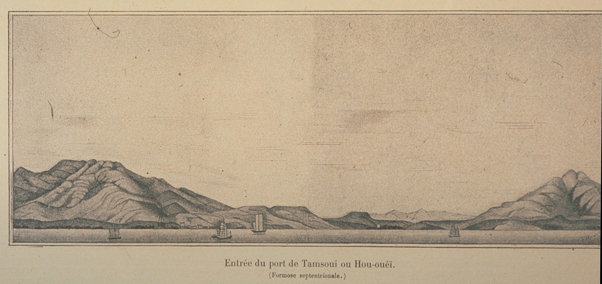

滬尾與淡水
「淡水」和「雞籠」曾為整北台灣的泛稱，前指淡水河流域和河口一帶地區。西班牙統治時期，將淡水河流域之地理區稱為淡水省區(Tamchui)。
清治時期，1723年，設台灣府淡水海防廳，由彰化縣管理行政事務，並置淡水捕盜同知兼北路防務；1731年，分設淡水廳，開啟了行政區劃的始端。因天津條約，於滬尾開港設海關，開放對外貿易之後，人口逐漸往淡水河河岸的艋舺、大稻埕、滬尾等開埠、集市與居住。
其中「滬尾」是在淡水河口東北側河岸的聚落名，也就是今日淡水的重要市街之一。
「滬尾」(臺灣話：Hóo-bué/Hōo-bé)之名可能為凱達格蘭語轉譯而來，語源為「Hobe」，是河口的意思。《臺海使槎錄》中稱「虎尾」，《重修福建臺灣府志》中稱「扈尾」，淡水福佑宮「望高樓碑誌」中稱「戶尾」。可證明不同的「Hōo-bué/bé」名稱皆為「Hobe」轉譯之結果。
另有說法指出，「滬」是指漁民捕魚之設施，「尾」則是指河流出海口。另有一說則是指由閩南語「雨尾」諧音演化，因為觀音山、淡水河一帶下雨，到此地後雨即停止，故名「雨尾」。
另一說法是「石滬」是早期海邊捕魚的設施，漲潮時，海水將魚群帶進石滬內，退潮時海水從石縫中流出，魚群便留在石滬內供漁夫捕捉，早期台灣北海岸有20~30個石滬群，淡水在石滬群最尾端，故稱「滬尾」。
也有說是源自此地在清治中期，即和簡稱為「滬」的上海通商頻繁，猶如是接續於上海後尾的城鎮，乃逐漸產生滬尾之名。
自清治末期至日治初期，「淡水」與「滬尾」並用，都指稱淡水河河口及五虎崗一帶地區。於1909年，臺北廳滬尾支廳淡水區設立滬尾公學校、滬尾尋常高等小學校、滬尾區、滬尾街，以及以「淡水」為名的淡水稅關、淡水郵便局。
1912年1月22日，臺北廳廳長井村大吉呈報總督府，希望解決此種名稱混亂的局面，改而統一使用「淡水」之名。經總督府批准後，於1912年9月21日正式將滬尾街改稱「淡水街」，滬尾支廳與滬尾區改稱「淡水支廳」與「淡水區」、滬尾公學校改名「淡水公學校」、以及滬尾尋常高等小學校改名「淡水尋常高等小學校」。
